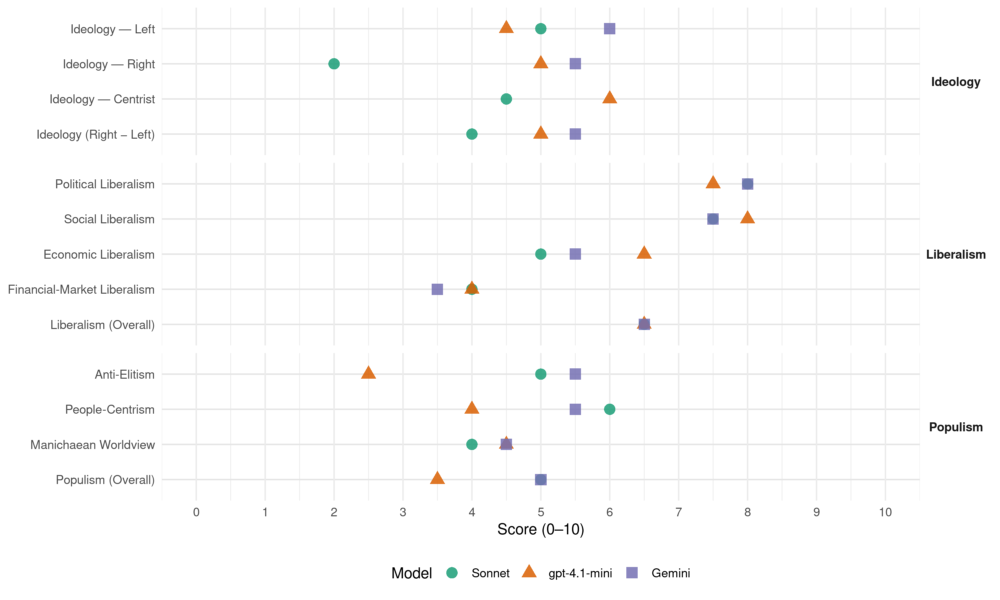

SYPOL (Cyprus, 2016)
manifesto_id 55340_201605
Get full text: This site shows derived annotations and short verbatim quotes only. The full manifesto text is © Manifesto Project / WZB — obtain it via manifesto-project.wzb.eu using the manifesto_id above.
Headline scores
| Dimension | Sonnet | gpt-4.1-mini | Gemini |
|---|---|---|---|
| Populism (Overall) | 5.0 | 3.5 | 5.0 |
| Anti-Elitism | 5.0 | 2.5 | 5.5 |
| People-Centrism | 6.0 | 4.0 | 5.5 |
| Manichaean Worldview | 4.0 | 4.5 | 4.5 |
| Ideology (Right − Left) | 4.0 | 5.0 | 5.5 |
| Liberalism (Overall) | 6.5 | 6.5 | 6.5 |
| Political Liberalism | 8.0 | 7.5 | 8.0 |
| Social Liberalism | 7.5 | 8.0 | 7.5 |
| Economic Liberalism | 5.0 | 6.5 | 5.5 |
| Financial-Market Liberalism | 4.0 | 4.0 | 3.5 |
Evidence per dimension
Economic Liberalism
Gemini · score 6.0 · verified · chunk 1
“φορολογικά κίνητρα στις βιομηχανίες που επενδύουν στον τομέα της έρευνας”
3.Ενίσχυση της προσπάθειας των κυπριακών ΜΜΕ για να στραφούν σε δραστηριότητες εντάσεως γνώσης. //Η Κυβέρνηση θα προσφέρει φορολογικά κίνητρα στις βιομηχανίες που επενδύουν στον τομέα της έρευνας και της καινοτομίας. //Το ισόποσο που αντιστοιχεί στην επένδυση
Gemini · score 5.0 · verified · chunk 2
“καθιστά ανταγωνιστικά σε περιβάλλον ΓΕΣΥ”
Αυτονόμηση δημοσίων νοσοκομείων έτσι που να τα καθιστά ανταγωνιστικά σε περιβάλλον ΓΕΣΥ. //ΆΜΕΣΗ Σταδιακή
gpt-4.1-mini · score 7.0 · verified · chunk 1
“Η Κύπρος χρειάζεται μια πιο ισορροπημένη ανάπτυξη έτσι ώστε να μην υπάρχει υπερεξάρτηση της οικονομίας από ένα τομέα”
Η Κύπρος χρειάζεται μια πιο ισορροπημένη ανάπτυξη έτσι ώστε να μην υπάρχει υπερεξάρτηση της οικονομίας από ένα τομέα. //Μια βιώσιμη ανάπτυξη θα πρέπει να αξιοποιεί στο μέγιστο βαθμό τις Ανανεώσιμες πηγές ενέργειας.
gpt-4.1-mini · score 6.0 · verified · chunk 2
“Η Κύπρος θα πρέπει να μελετήσει σοβαρά και σε βάθος εναλλακτικές επιλογές, μεταξύ αυτών και την επιστροφή της στο Εθνικό Νόμισμα της Λίρας”
…Η εξυπηρέτηση πολιτικών και εθνικών σκοπιμοτήτων έχει υποσκάψει την προοπτική του Ευρώ. Η Κύπρος θα πρέπει να μελετήσει σοβαρά και σε βάθος εναλλακτικές επιλογές, μεταξύ αυτών και την επιστροφή της στο Εθνικό Νόμισμα της Λίρας. ΔΗΛΩΣΗ ΕΠΙΚΕΦΑΛΗΣ ΠΟΛΙΤΙΚΟΥ ΣΧΕΔΙΑΣΜΟΥ ΑΝΔΡΕΑ ΑΠΟΣΤΟΛΟΥ…
Sonnet · score 6.0 · mixed · chunk 1
“φορολογικά κίνητρα στις βιομηχανίες που επενδύουν”
Η Κυβέρνηση θα προσφέρει φορολογικά κίνητρα στις βιομηχανίες που επενδύουν στον τομέα της έρευνας και της καινοτομίας
Sonnet · score 5.0 · verified · chunk 2
“ανταγωνιστικά σε περιβάλλον ΓΕΣΥ”
ΑΜΕΣΗ Ορθολογική Αυτονόμηση δημοσίων νοσοκομείων έτσι που να τα καθιστά ανταγωνιστικά σε περιβάλλον ΓΕΣΥ.
Financial-Market Liberalism
Gemini · score 5.0 · verified · chunk 1
“να αναστηλώσει το Χρηματοπιστωτικό σύστημα //και να το ενισχύσει με την ταυτόχρονη επιβολή αυστηρών μηχανισμών ελέγχου και διαφάνειας”
Οι Κυπριακές επιχειρήσεις και ο Τραπεζικός τομέας βρίσκονται σε συνθήκες αβεβαιότητας και ανασφάλειας. //Μέσα στο νέο οικονομικό περιβάλλον που δημιούργησε η απόφαση του Γιούρογκρουπ και το Μνημόνιο της Τρόικας, επιβάλλεται η χώρα να αναστηλώσει το Χρηματοπιστωτικό σύστημα //και να το ενισχύσει με την ταυτόχρονη επιβολή αυστηρών μηχανισμών ελέγχου και διαφάνειας. //Επιβάλλεται η Κύπρος, να ξεφύγει το ταχύτερο δυνατόν
Gemini · score 2.0 · verified · chunk 2
“επιστροφή της στο Εθνικό Νόμισμα της Λίρας”
εναλλακτικές επιλογές, μεταξύ αυτών και την επιστροφή της στο Εθνικό Νόμισμα της Λίρας. ΔΗΛΩΣΗ ΕΠΙΚΕΦΑΛΗΣ
gpt-4.1-mini · score 6.0 · verified · chunk 1
“Επιβάλλεται η χώρα να αναστηλώσει το Χρηματοπιστωτικό σύστημα και να το ενισχύσει με την ταυτόχρονη επιβολή αυστηρών μηχανισμών ελέγχου και διαφάνειας”
Επιβάλλεται η χώρα να αναστηλώσει το Χρηματοπιστωτικό σύστημα και να το ενισχύσει με την ταυτόχρονη επιβολή αυστηρών μηχανισμών ελέγχου και διαφάνειας. //Η αξιοπιστία της Κύπρου ως Κέντρο παροχής χρηματοοικονομικών υπηρεσιών, έχει πληγεί ανεπανόρθωτα.
gpt-4.1-mini · score 2.0 · verified · chunk 2
“Η εμπειρία από την απόφαση του Γιούρογκρουπ της 25ης Μαρτίου 2013, αλλά και ο τρόπος αντιμετώπισης της Ελλάδας και των άλλων χωρών του Ευρωπαϊκού Νότου από την Ε.Ε, δημιουργεί πολλά ερωτηματικά”
…Η εμπειρία από την απόφαση του Γιούρογκρουπ της 25ης Μαρτίου 2013, αλλά και ο τρόπος αντιμετώπισης της Ελλάδας και των άλλων χωρών του Ευρωπαϊκού Νότου από την Ε.Ε, δημιουργεί πολλά ερωτηματικά ως προς τις πραγματικές αρχές και αξίες που διέπουν τη λειτουργία της Ένωσης. Είναι εμφανές ότι η Γερμανία διεκδικεί ηγεμονικό ρόλο επί της Ευρωπαϊκής Ένωσης…
Sonnet · score 5.0 · mixed · chunk 1
“αυστηρών μηχανισμών ελέγχου και διαφάνειας”
επιβάλλεται η χώρα να αναστηλώσει το Χρηματοπιστωτικό σύστημα και να το ενισχύσει με την ταυτόχρονη επιβολή αυστηρών μηχανισμών ελέγχου και διαφάνειας
Sonnet · score 4.0 · verified · chunk 2
“επιστροφή της στο Εθνικό Νόμισμα της Λίρας”
Η Κύπρος θα πρέπει να μελετήσει σοβαρά και σε βάθος εναλλακτικές επιλογές, μεταξύ αυτών και την επιστροφή της στο Εθνικό Νόμισμα της Λίρας.
Political Liberalism
Gemini · score 8.0 · verified · chunk 1
“σεβασμό και την εφαρμογή των αρχών της δημοκρατίας και του κράτους δικαίου”
Η λύση να είναι λειτουργική και οι διαδικασίες λήψης απόφασης να είναι αποτελεσματικές και να μην οδηγούν σε αδιέξοδα και προστριβές. //Αυτό μπορεί να επιτευχθεί με το σεβασμό και την εφαρμογή των αρχών της δημοκρατίας και του κράτους δικαίου. //Να μην υπάρχουν εγγυήτριες δυνάμεις
Gemini · score 8.0 · verified · chunk 2
“συνεχή εμβάθυνση της δημοκρατίας, // τη συνεχή διεύρυνση”
διαδικασίες. //Μόνο με τη συνεχή εμβάθυνση της δημοκρατίας, // τη συνεχή διεύρυνση των δικαιωμάτων του πολίτη
gpt-4.1-mini · score 7.0 · verified · chunk 1
“Η λύση θα πρέπει να επιτρέπει σε όλους τους νόμιμους πολίτες της Κυπριακής Δημοκρατίας να διακινούνται και να εγκαθίστανται ελεύθερα”
Η λύση θα πρέπει να επιτρέπει σε όλους τους νόμιμους πολίτες της Κυπριακής Δημοκρατίας να διακινούνται και να εγκαθίστανται ελεύθερα σε όποια γωνιά της Κύπρου επιλέξουν. //Να έχουν το δικαίωμα ιδιοκτησίας και εργασίας σε όποια περιοχή θελήσουν να ζήσουν.
gpt-4.1-mini · score 8.0 · verified · chunk 2
“Μόνο με τη συνεχή εμβάθυνση της δημοκρατίας, τη συνεχή διεύρυνση των δικαιωμάτων του πολίτη”
…να επιτευχθεί με την εφαρμογή της Αρχής του Ανακλητού, που δίνει το δικαίωμα και την εξουσία στους πολίτες να ανακαλούν τους εκλελεγμένους αντιπροσώπους τους (Πρόεδρο της Δημοκρατίας, Βουλευτές, Δημάρχους κτλ) με δημοκρατικές διαδικασίες. //Μόνο με τη συνεχή εμβάθυνση της δημοκρατίας, τη συνεχή διεύρυνση των δικαιωμάτων του πολίτη, τη συνεχή αναβάθμιση του ρόλου των πολιτών, θα υλοποιηθεί το όραμα της συμμετοχικής δημοκρατίας…
Sonnet · score 8.0 · verified · chunk 1
“αρχές της δημοκρατίας και του κράτους δικαίου”
Αυτό μπορεί να επιτευχθεί με το σεβασμό και την εφαρμογή των αρχών της δημοκρατίας και του κράτους δικαίου
Sonnet · score 8.0 · verified · chunk 2
“συνεχή εμβάθυνση της δημοκρατίας”
Μόνο με τη συνεχή εμβάθυνση της δημοκρατίας, τη συνεχή διεύρυνση των δικαιωμάτων του πολίτη, τη συνεχή αναβάθμιση του ρόλου των πολιτών, θα υλοποιηθεί το όραμα της συμμετοχικής δημοκρατίας.
Liberalism (Overall)
Gemini · score 7.0 · verified · chunk 1
“σεβασμό και την εφαρμογή των αρχών της δημοκρατίας και του κράτους δικαίου”
Η λύση να είναι λειτουργική και οι διαδικασίες λήψης απόφασης να είναι αποτελεσματικές και να μην οδηγούν σε αδιέξοδα και προστριβές. //Αυτό μπορεί να επιτευχθεί με το σεβασμό και την εφαρμογή των αρχών της δημοκρατίας και του κράτους δικαίου. //Να μην υπάρχουν εγγυήτριες δυνάμεις
Gemini · score 6.0 · verified · chunk 2
“συνεχή εμβάθυνση της δημοκρατίας, // τη συνεχή διεύρυνση”
διαδικασίες. //Μόνο με τη συνεχή εμβάθυνση της δημοκρατίας, // τη συνεχή διεύρυνση των δικαιωμάτων του πολίτη
gpt-4.1-mini · score 7.0 · verified · chunk 1
“Η Κύπρος χρειάζεται μια πιο ισορροπημένη ανάπτυξη έτσι ώστε να μην υπάρχει υπερεξάρτηση της οικονομίας από ένα τομέα”
Η Κύπρος χρειάζεται μια πιο ισορροπημένη ανάπτυξη έτσι ώστε να μην υπάρχει υπερεξάρτηση της οικονομίας από ένα τομέα. //Μια βιώσιμη ανάπτυξη θα πρέπει να αξιοποιεί στο μέγιστο βαθμό τις Ανανεώσιμες πηγές ενέργειας.
gpt-4.1-mini · score 6.0 · verified · chunk 2
“Μόνο με τη συνεχή εμβάθυνση της δημοκρατίας, τη συνεχή διεύρυνση των δικαιωμάτων του πολίτη”
…να επιτευχθεί με την εφαρμογή της Αρχής του Ανακλητού, που δίνει το δικαίωμα και την εξουσία στους πολίτες να ανακαλούν τους εκλελεγμένους αντιπροσώπους τους (Πρόεδρο της Δημοκρατίας, Βουλευτές, Δημάρχους κτλ) με δημοκρατικές διαδικασίες. //Μόνο με τη συνεχή εμβάθυνση της δημοκρατίας, τη συνεχή διεύρυνση των δικαιωμάτων του πολίτη, τη συνεχή αναβάθμιση του ρόλου των πολιτών, θα υλοποιηθεί το όραμα της συμμετοχικής δημοκρατίας…
Sonnet · score 7.0 · verified · chunk 1
“αρχές της δημοκρατίας και του κράτους δικαίου”
Αυτό μπορεί να επιτευχθεί με το σεβασμό και την εφαρμογή των αρχών της δημοκρατίας και του κράτους δικαίου
Sonnet · score 6.0 · verified · chunk 2
“συνεχή εμβάθυνση της δημοκρατίας”
Μόνο με τη συνεχή εμβάθυνση της δημοκρατίας, τη συνεχή διεύρυνση των δικαιωμάτων του πολίτη, θα υλοποιηθεί το όραμα της συμμετοχικής δημοκρατίας.
Anti-Elitism
Gemini · score 6.0 · verified · chunk 1
“Η κουλτούρα της ατιμωρησίας αποτελεί την πηγή οικονομικών σκανδάλων”
κομματική ταυτότητα. //Η κουλτούρα της κομματικοποίησης του Κράτους και όλων των κοινωνικών θεσμών είναι καταστροφική και εξευτελίζει την αξιοπρέπεια των πολιτών. //Η έννοια της προσωπικής αστικής και ποινικής ευθύνης πρέπει να εισαχθεί σε όλα τα επίπεδα αστικής εξουσίας και δημόσιας διοίκησης. //Η κουλτούρα της ατιμωρησίας αποτελεί την πηγή οικονομικών σκανδάλων και της διαπλοκής, γι΄ αυτό και πρέπει να αντικατασταθεί από την αρχή της μηδενικής ανοχής // και της διαφάνειας.
Gemini · score 5.0 · verified · chunk 2
“Γερμανία διεκδικεί ηγεμονικό ρόλο επί της Ευρωπαϊκής Ένωσης”
Είναι εμφανές ότι η Γερμανία διεκδικεί ηγεμονικό ρόλο επί της Ευρωπαϊκής Ένωσης σε βάρος των άλλων εταίρων
gpt-4.1-mini · score 2.0 · verified · chunk 1
“Η κουλτούρα της κομματικοποίησης του Κράτους και όλων των κοινωνικών θεσμών είναι καταστροφική”
Η κουλτούρα της κομματικοποίησης του Κράτους και όλων των κοινωνικών θεσμών είναι καταστροφική και εξευτελίζει την αξιοπρέπεια των πολιτών. //Η έννοια της προσωπικής αστικής και ποινικής ευθύνης πρέπει να εισαχθεί σε όλα τα επίπεδα αστικής εξουσίας και δημόσιας διοίκησης.
gpt-4.1-mini · score 3.0 · verified · chunk 2
“Η συμπεριφορά της Γερμανίας αποδεικνύει πως τα στενά Εθνικά οικονομικά συμφέροντα επιβάλλονται σε βάρος των κοινών Ευρωπαϊκών αρχών”
…Είναι εμφανές ότι η Γερμανία διεκδικεί ηγεμονικό ρόλο επί της Ευρωπαϊκής Ένωσης σε βάρος των άλλων εταίρων και της κοινοτικής αλληλεγγύης. Η συμπεριφορά της Γερμανίας αποδεικνύει πως τα στενά Εθνικά οικονομικά συμφέροντα επιβάλλονται σε βάρος των κοινών Ευρωπαϊκών αρχών και οραμάτων. Συνέχιση αυτής της συμπεριφοράς θα θέσει σε κίνδυνο την Ευρωπαϊκή Ένωση…
Sonnet · score 5.0 · mixed · chunk 1
“γνωστά κέντρα αποφάσεων”
η κατάλυση της Κυπριακής Δημοκρατίας είναι το μεγάλο διακύβευμα των εξελίξεων που έχουν σχεδιαστεί και δρομολογηθεί από τα γνωστά κέντρα αποφάσεων
Sonnet · score 5.0 · verified · chunk 2
“η Γερμανία διεκδικεί ηγεμονικό ρόλο επί της Ευρωπαϊκής Ένωσης”
Είναι εμφανές ότι η Γερμανία διεκδικεί ηγεμονικό ρόλο επί της Ευρωπαϊκής Ένωσης σε βάρος των άλλων εταίρων και της κοινοτικής αλληλεγγύης.
Ideology — Centrist
gpt-4.1-mini · score 6.0 · verified · chunk 1
“Η πολιτική των μονομερών υποχωρήσεων έχει χρεοκοπήσει και οδήγησε το Κυπριακό σε επικίνδυνα μοντέλα λύσης”
Η πολιτική των μονομερών υποχωρήσεων έχει χρεοκοπήσει και οδήγησε το Κυπριακό σε επικίνδυνα μοντέλα λύσης. //Η ικανοποίηση των Τουρκικών απαιτήσεων δεν οδήγησε σε εκλογίκευση της Τουρκίας αλλά ενθαρρύνει την αδιαλλαξία της.
gpt-4.1-mini · score 6.0 · verified · chunk 2
“Μόνο με τη συνεχή εμβάθυνση της δημοκρατίας, τη συνεχή διεύρυνση των δικαιωμάτων του πολίτη”
…να επιτευχθεί με την εφαρμογή της Αρχής του Ανακλητού, που δίνει το δικαίωμα και την εξουσία στους πολίτες να ανακαλούν τους εκλελεγμένους αντιπροσώπους τους (Πρόεδρο της Δημοκρατίας, Βουλευτές, Δημάρχους κτλ) με δημοκρατικές διαδικασίες. //Μόνο με τη συνεχή εμβάθυνση της δημοκρατίας, τη συνεχή διεύρυνση των δικαιωμάτων του πολίτη, τη συνεχή αναβάθμιση του ρόλου των πολιτών, θα υλοποιηθεί το όραμα της συμμετοχικής δημοκρατίας…
Sonnet · score 4.0 · verified · chunk 1
“ανεξάρτητα κομματικής ή ιδεολογικής τοποθέτησης”
απαιτείται η αξιοποίηση όλων των πολιτών, ανεξάρτητα κομματικής ή ιδεολογικής τοποθέτησης
Sonnet · score 5.0 · verified · chunk 2
“τη συνεχή διεύρυνση των δικαιωμάτων του πολίτη”
Μόνο με τη συνεχή εμβάθυνση της δημοκρατίας, τη συνεχή διεύρυνση των δικαιωμάτων του πολίτη, τη συνεχή αναβάθμιση του ρόλου των πολιτών.
Ideology — Left
Gemini · score 6.0 · verified · chunk 1
“Η κατανομή των βαρών της ύφεσης πρέπει να είναι δίκαιη”
Η έννοια της Κοινωνικής Δικαιοσύνης και της Κοινωνικής Αλληλεγγύης αποκτά ιδιαίτερη αξία, στις σημερινές συνθήκες όπου έχει διαρρηχθεί ο κοινωνικός ιστός. //Η κατανομή των βαρών της ύφεσης πρέπει να είναι δίκαιη //και να γίνει με τέτοιο τρόπο που να διασφαλίζει
Gemini · score 6.0 · verified · chunk 2
“Χρειάζεται να αναπτύξουμε επιτέλους ένα κράτος πρόνοιας”
ανάπτυξης του λαού μας. // Χρειάζεται να αναπτύξουμε επιτέλους ένα κράτος πρόνοιας. //Ως Συμμαχία Πολιτών
gpt-4.1-mini · score 5.0 · verified · chunk 1
“Η Κοινωνική Δικαιοσύνη πρέπει να αποτελεί την πεμπτουσία του Κράτους”
Η Κοινωνική Δικαιοσύνη πρέπει να αποτελεί την πεμπτουσία του Κράτους. //Η έννοια της Κοινωνικής Δικαιοσύνης και της Κοινωνικής Αλληλεγγύης αποκτά ιδιαίτερη αξία, στις σημερινές συνθήκες όπου έχει διαρρηχθεί ο κοινωνικός ιστός.
gpt-4.1-mini · score 4.0 · verified · chunk 2
“ας εστιάσουμε λοιπόν, στο μέλλον του τόπου μας και ας αφήσουμε τους αριθμούς στην άκρη και να δούμε πρώτα το θέμα της επιβίωσης και της ανάπτυξης του λαού μας”
…Να μπορούν να δημιουργούν υγιή οικογένεια και να συνεχίζουν απρόσκοπτα την καριέρα τους. Ας εστιάσουμε λοιπόν, στο μέλλον του τόπου μας και ας αφήσουμε τους αριθμούς στην άκρη και να δούμε πρώτα το θέμα της επιβίωσης και της ανάπτυξης του λαού μας. Χρειάζεται να αναπτύξουμε επιτέλους ένα κράτος πρόνοιας…
Sonnet · score 4.0 · mixed · chunk 1
“Κοινωνική Δικαιοσύνη πρέπει να αποτελεί”
Η Κοινωνική Δικαιοσύνη πρέπει να αποτελεί την πεμπτουσία του Κράτους
Sonnet · score 5.0 · verified · chunk 2
“Χρειάζεται να αναπτύξουμε επιτέλους ένα κράτος πρόνοιας”
Ας εστιάσουμε λοιπόν, στο μέλλον του τόπου μας και ας αφήσουμε τους αριθμούς στην άκρη. Χρειάζεται να αναπτύξουμε επιτέλους ένα κράτος πρόνοιας.
Ideology (Right − Left)
Gemini · score 6.0 · verified · chunk 1
“Αλλοίωση του δημογραφικού χαρακτήρα του νησιού με προοπτική εκτουρκισμού”
Επιβολή μιας λογικής «διχοτόμησης της κυριαρχίας», μέσω της οποίας να διασφαλίζεται ότι σε περίπτωση διαζυγίου, τα δύο «συνιστώντα κράτη» θα διατηρούν την κυριαρχία τους το καθ’ ένα στη γεωγραφική του επικράτεια //Αλλοίωση του δημογραφικού χαρακτήρα του νησιού με προοπτική εκτουρκισμού //Η Τουρκία επιδιώκει το πλήρη στρατηγικό έλεγχο
Gemini · score 5.0 · verified · chunk 2
“Χρειάζεται να αναπτύξουμε επιτέλους ένα κράτος πρόνοιας”
ανάπτυξης του λαού μας. // Χρειάζεται να αναπτύξουμε επιτέλους ένα κράτος πρόνοιας. //Ως Συμμαχία Πολιτών
gpt-4.1-mini · score 6.0 · verified · chunk 1
“Η πολιτική των μονομερών υποχωρήσεων έχει χρεοκοπήσει και οδήγησε το Κυπριακό σε επικίνδυνα μοντέλα λύσης”
Η πολιτική των μονομερών υποχωρήσεων έχει χρεοκοπήσει και οδήγησε το Κυπριακό σε επικίνδυνα μοντέλα λύσης. //Η ικανοποίηση των Τουρκικών απαιτήσεων δεν οδήγησε σε εκλογίκευση της Τουρκίας αλλά ενθαρρύνει την αδιαλλαξία της.
gpt-4.1-mini · score 4.0 · verified · chunk 2
“ας εστιάσουμε λοιπόν, στο μέλλον του τόπου μας και ας αφήσουμε τους αριθμούς στην άκρη και να δούμε πρώτα το θέμα της επιβίωσης και της ανάπτυξης του λαού μας”
…Να μπορούν να δημιουργούν υγιή οικογένεια και να συνεχίζουν απρόσκοπτα την καριέρα τους. Ας εστιάσουμε λοιπόν, στο μέλλον του τόπου μας και ας αφήσουμε τους αριθμούς στην άκρη και να δούμε πρώτα το θέμα της επιβίωσης και της ανάπτυξης του λαού μας. Χρειάζεται να αναπτύξουμε επιτέλους ένα κράτος πρόνοιας…
Sonnet · score 4.0 · mixed · chunk 1
“κουλτούρα της κομματικοποίησης του Κράτους”
Η κουλτούρα της κομματικοποίησης του Κράτους και όλων των κοινωνικών θεσμών είναι καταστροφική και εξευτελίζει την αξιοπρέπεια των πολιτών
Sonnet · score 4.0 · verified · chunk 2
“Χρειάζεται να αναπτύξουμε επιτέλους ένα κράτος πρόνοιας”
Ας εστιάσουμε λοιπόν, στο μέλλον του τόπου μας. Χρειάζεται να αναπτύξουμε επιτέλους ένα κράτος πρόνοιας.
Ideology — Right
Gemini · score 7.0 · verified · chunk 1
“Αλλοίωση του δημογραφικού χαρακτήρα του νησιού με προοπτική εκτουρκισμού”
Επιβολή μιας λογικής «διχοτόμησης της κυριαρχίας», μέσω της οποίας να διασφαλίζεται ότι σε περίπτωση διαζυγίου, τα δύο «συνιστώντα κράτη» θα διατηρούν την κυριαρχία τους το καθ’ ένα στη γεωγραφική του επικράτεια //Αλλοίωση του δημογραφικού χαρακτήρα του νησιού με προοπτική εκτουρκισμού //Η Τουρκία επιδιώκει το πλήρη στρατηγικό έλεγχο
Gemini · score 4.0 · verified · chunk 2
“καλλιεργεί την εθνική συνείδηση, // την αγάπη προς την πατρίδα”
η οποία πρέπει να καλλιεργεί την εθνική συνείδηση, // την αγάπη προς την πατρίδα, // την προσήλωση στις αρχές
gpt-4.1-mini · score 7.0 · verified · chunk 1
“Η λύση του Κυπριακού δημιούργησε ο Τουρκικός επεκτατισμός και το διαιωνίζει η τουρκική αδιαλλαξία”
Η λύση του Κυπριακού δημιούργησε ο Τουρκικός επεκτατισμός και το διαιωνίζει η τουρκική αδιαλλαξία. //Η σημερινή κατάσταση και η διχοτόμηση, υπό οποιαδήποτε μορφή και σχήμα, αποτελούν αδικία και εγκυμονούν κινδύνους, γι’ αυτό και δεν αποτελούν επιλογή.
gpt-4.1-mini · score 3.0 · verified · chunk 2
“Αποτροπή των Τουρκικών σχεδιασμών και επιδιώξεων”
…3.Στρατηγικές Συμμαχίες //α.Αξιοποίηση του Φυσικού Αερίου για τη σύγκλιση ενεργειακών συμφερόντων με στόχο τη σύναψη Στρατηγικών Συμμαχιών που μπορούν να στηρίζουν την Κύπρο στην προσπάθεια για επίλυση του Κυπριακού (Ισραήλ, ΗΠΑ, Γαλλία, Ρωσία κλπ). //β.Αποτροπή των Τουρκικών σχεδιασμών και επιδιώξεων. ΠΡΟΤΑΣΕΙΣ ΣΥΜΜΑΧΙΑΣ ΠΟΛΙTΩΝ ΓΙΑ ΥΓΕΙΑ…
Sonnet · score 5.0 · mixed · chunk 1
“επιβίωση του Κυπριακού Ελληνισμού”
Στρατηγικός μας στόχος σε σχέση με το κυπριακό είναι η Απελευθέρωση… η λύση πρέπει να διασφαλίζει την εθνική, πολιτική, πολιτισμική και οικονομική επιβίωση του Κυπριακού Ελληνισμού
Sonnet · score 2.0 · verified · chunk 2
“την εθνική συνείδηση, την αγάπη προς την πατρίδα”
Οι αρχές αυτές πρέπει να αποτελούν αναπόσπαστο μέρος της παιδείας η οποία πρέπει να καλλιεργεί την εθνική συνείδηση, την αγάπη προς την πατρίδα.
Manichaean Worldview
Gemini · score 4.0 · verified · chunk 1
“επιβάλλει στην Κύπρο το νέο μοντέλο οικονομικής και πολιτικής αποικιοκρατίας”
Το Μνημόνιο αποτελεί το εργαλείο που περιορίζει την Κρατική Κυριαρχία //και επιβάλλει στην Κύπρο το νέο μοντέλο οικονομικής και πολιτικής αποικιοκρατίας, σε μια περίοδο ανασχεδιασμού του γεωπολιτικού χάρτη
Gemini · score 5.0 · verified · chunk 2
“διαφαινόμενη έκρηξη κοινωνικής εξαθλίωσης του λαού μας”
με στόχο να αποτραπεί η διαφαινόμενη έκρηξη κοινωνικής εξαθλίωσης του λαού μας, // και να δημιουργηθούν
gpt-4.1-mini · score 7.0 · verified · chunk 1
“Η λύση του Κυπριακού δημιούργησε ο Τουρκικός επεκτατισμός και το διαιωνίζει η τουρκική αδιαλλαξία”
Η λύση του Κυπριακού δημιούργησε ο Τουρκικός επεκτατισμός και το διαιωνίζει η τουρκική αδιαλλαξία. //Η σημερινή κατάσταση και η διχοτόμηση, υπό οποιαδήποτε μορφή και σχήμα, αποτελούν αδικία και εγκυμονούν κινδύνους, γι’ αυτό και δεν αποτελούν επιλογή.
gpt-4.1-mini · score 2.0 · verified · chunk 2
“Η συμπεριφορά της Γερμανίας αποδεικνύει πως τα στενά Εθνικά οικονομικά συμφέροντα επιβάλλονται σε βάρος των κοινών Ευρωπαϊκών αρχών”
…Είναι εμφανές ότι η Γερμανία διεκδικεί ηγεμονικό ρόλο επί της Ευρωπαϊκής Ένωσης σε βάρος των άλλων εταίρων και της κοινοτικής αλληλεγγύης. Η συμπεριφορά της Γερμανίας αποδεικνύει πως τα στενά Εθνικά οικονομικά συμφέροντα επιβάλλονται σε βάρος των κοινών Ευρωπαϊκών αρχών και οραμάτων. Συνέχιση αυτής της συμπεριφοράς θα θέσει σε κίνδυνο την Ευρωπαϊκή Ένωση…
Sonnet · score 4.0 · mixed · chunk 1
“νέο μοντέλο οικονομικής και πολιτικής αποικιοκρατίας”
επιβάλλει στην Κύπρο το νέο μοντέλο οικονομικής και πολιτικής αποικιοκρατίας, σε μια περίοδο ανασχεδιασμού του γεωπολιτικού χάρτη
Sonnet · score 4.0 · verified · chunk 2
“στενά Εθνικά οικονομικά συμφέροντα επιβάλλονται”
Η συμπεριφορά της Γερμανίας αποδεικνύει πως τα στενά Εθνικά οικονομικά συμφέροντα επιβάλλονται σε βάρος των κοινών Ευρωπαϊκών αρχών και οραμάτων.
People-Centrism
Gemini · score 5.0 · verified · chunk 1
“Η κυριαρχία του λαού πρέπει να είναι διαρκής”
πολιτικά πρόσωπα πρέπει να είναι υπόλογοι στους πολίτες καθ’ όλη τη διάρκεια της θητείας τους και όχι μόνο στην προεκλογική περίοδο. //Η δημοκρατία δεν εξαντλείται κατά τη στιγμή της ψηφοφορίας. //Η κυριαρχία του λαού πρέπει να είναι διαρκής για να ελέγχονται τα πολιτικά πρόσωπα ως προς την υλοποίηση του Κοινωνικού Συμβολαίου
Gemini · score 6.0 · verified · chunk 2
“επιβίωσης και της ανάπτυξης του λαού μας”
να δούμε πρώτα το θέμα της επιβίωσης και της ανάπτυξης του λαού μας. // Χρειάζεται να αναπτύξουμε
gpt-4.1-mini · score 3.0 · verified · chunk 1
“Ας εστιάσουμε λοιπόν, στο μέλλον του τόπου μας και ας αφήσουμε τους αριθμούς στην άκρη και να δούμε πρώτα το θέμα της επιβίωσης και της ανάπτυξης του λαού μας”
Ας εστιάσουμε λοιπόν, στο μέλλον του τόπου μας και ας αφήσουμε τους αριθμούς στην άκρη και να δούμε πρώτα το θέμα της επιβίωσης και της ανάπτυξης του λαού μας. // Χρειάζεται να αναπτύξουμε επιτέλους ένα κράτος πρόνοιας.
gpt-4.1-mini · score 5.0 · verified · chunk 2
“ας εστιάσουμε λοιπόν, στο μέλλον του τόπου μας και ας αφήσουμε τους αριθμούς στην άκρη και να δούμε πρώτα το θέμα της επιβίωσης και της ανάπτυξης του λαού μας”
…Να μπορούν να δημιουργούν υγιή οικογένεια και να συνεχίζουν απρόσκοπτα την καριέρα τους. Ας εστιάσουμε λοιπόν, στο μέλλον του τόπου μας και ας αφήσουμε τους αριθμούς στην άκρη και να δούμε πρώτα το θέμα της επιβίωσης και της ανάπτυξης του λαού μας. Χρειάζεται να αναπτύξουμε επιτέλους ένα κράτος πρόνοιας…
Sonnet · score 5.0 · mixed · chunk 1
“κυριαρχία του λαού πρέπει να είναι διαρκής”
Η κυριαρχία του λαού πρέπει να είναι διαρκής για να ελέγχονται τα πολιτικά πρόσωπα ως προς την υλοποίηση του Κοινωνικού Συμβολαίου
Sonnet · score 6.0 · verified · chunk 2
“την επιβίωσης και της ανάπτυξης του λαού μας”
Ας εστιάσουμε λοιπόν, στο μέλλον του τόπου μας και ας αφήσουμε τους αριθμούς στην άκρη και να δούμε πρώτα το θέμα της επιβίωσης και της ανάπτυξης του λαού μας.
Populism (Overall)
Gemini · score 5.0 · verified · chunk 1
“Η κουλτούρα της ατιμωρησίας αποτελεί την πηγή οικονομικών σκανδάλων”
κομματική ταυτότητα. //Η κουλτούρα της κομματικοποίησης του Κράτους και όλων των κοινωνικών θεσμών είναι καταστροφική και εξευτελίζει την αξιοπρέπεια των πολιτών. //Η έννοια της προσωπικής αστικής και ποινικής ευθύνης πρέπει να εισαχθεί σε όλα τα επίπεδα αστικής εξουσίας και δημόσιας διοίκησης. //Η κουλτούρα της ατιμωρησίας αποτελεί την πηγή οικονομικών σκανδάλων και της διαπλοκής, γι΄ αυτό και πρέπει να αντικατασταθεί από την αρχή της μηδενικής ανοχής // και της διαφάνειας.
Gemini · score 5.0 · verified · chunk 2
“διαφαινόμενη έκρηξη κοινωνικής εξαθλίωσης του λαού μας”
με στόχο να αποτραπεί η διαφαινόμενη έκρηξη κοινωνικής εξαθλίωσης του λαού μας, // και να δημιουργηθούν
gpt-4.1-mini · score 4.0 · verified · chunk 1
“Η κουλτούρα της κομματικοποίησης του Κράτους και όλων των κοινωνικών θεσμών είναι καταστροφική”
Η κουλτούρα της κομματικοποίησης του Κράτους και όλων των κοινωνικών θεσμών είναι καταστροφική και εξευτελίζει την αξιοπρέπεια των πολιτών. //Η έννοια της προσωπικής αστικής και ποινικής ευθύνης πρέπει να εισαχθεί σε όλα τα επίπεδα αστικής εξουσίας και δημόσιας διοίκησης.
gpt-4.1-mini · score 3.0 · verified · chunk 2
“Η συμπεριφορά της Γερμανίας αποδεικνύει πως τα στενά Εθνικά οικονομικά συμφέροντα επιβάλλονται σε βάρος των κοινών Ευρωπαϊκών αρχών”
…Είναι εμφανές ότι η Γερμανία διεκδικεί ηγεμονικό ρόλο επί της Ευρωπαϊκής Ένωσης σε βάρος των άλλων εταίρων και της κοινοτικής αλληλεγγύης. Η συμπεριφορά της Γερμανίας αποδεικνύει πως τα στενά Εθνικά οικονομικά συμφέροντα επιβάλλονται σε βάρος των κοινών Ευρωπαϊκών αρχών και οραμάτων. Συνέχιση αυτής της συμπεριφοράς θα θέσει σε κίνδυνο την Ευρωπαϊκή Ένωση…
Sonnet · score 4.0 · mixed · chunk 1
“κουλτούρα της ατιμωρησίας αποτελεί την πηγή”
Η κουλτούρα της ατιμωρησίας αποτελεί την πηγή οικονομικών σκανδάλων και της διαπλοκής, γι΄ αυτό και πρέπει να αντικατασταθεί από την αρχή της μηδενικής ανοχής
Sonnet · score 5.0 · verified · chunk 2
“η Γερμανία διεκδικεί ηγεμονικό ρόλο”
Είναι εμφανές ότι η Γερμανία διεκδικεί ηγεμονικό ρόλο επί της Ευρωπαϊκής Ένωσης σε βάρος των άλλων εταίρων και της κοινοτικής αλληλεγγύης.
Social Liberalism